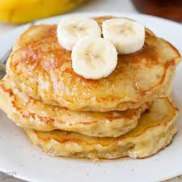

Banana Pancake Recipe

A pancake (or hotcake, griddlecake, or flapjack) is a flat cake, often thin and round, prepared from a starch-based batter that may contain eggs,
milk and butter and cooked on a hot surface such as a griddle or frying pan, often frying with oil or butter. Archaeological evidence suggests
that pancakes were probably the earliest and most widespread cereal food eaten in prehistoric societies.
Ingredients
- 1 cup all-purpose flour
- 1 tablespoon white sugar
- 2 teaspoons baking powder
- ¼ teaspoon salt
- 1 egg, beaten
- 1 cup milk
- 2 tablespoons vegetable oil
- 2 ripe bananas, mashed
Steps
- Combine flour, white sugar, baking powder and salt. In a separate bowl, mix together egg, milk, vegetable oil and bananas.
- Stir flour mixture into banana mixture; batter will be slightly lumpy.
- Heat a lightly oiled griddle or frying pan over medium high heat. Pour or scoop the batter onto the griddle, using approximately
1/4 cup for each pancake. Cook until pancakes are golden brown on both sides; serve hot.